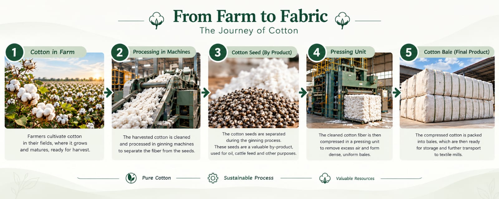
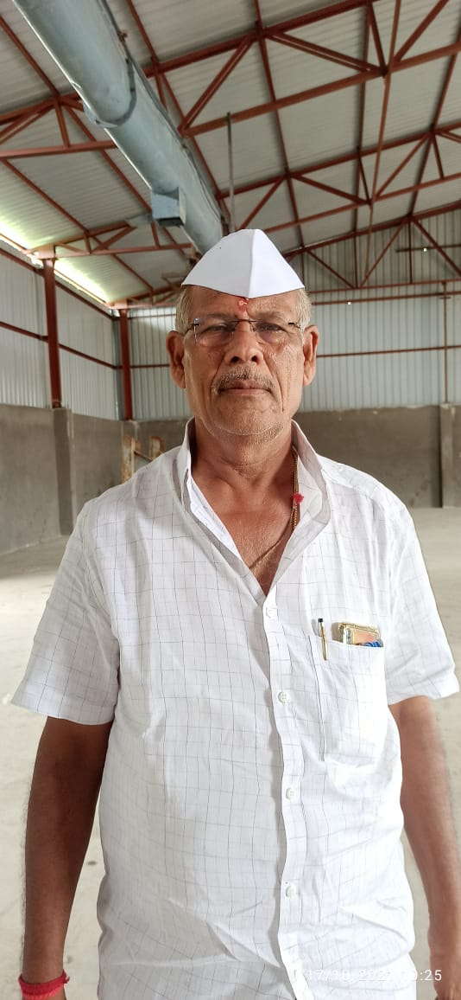

Rooted in Farmer build with Trust.
Raman Agro Industries is an agri-processing and agri-commodity business based in Jintur, Maharashtra. Our core business is cotton ginning and pressing, transforming raw cotton into cotton bales, with cottonseed as a valuable by-product.

Cotton • Cottonseed • Agri CommoditiesSupporting the agricultural value chain since 2010.
An agricultural business grounded in the farmer.
Established in 2010, Raman Agro Industries brings together agricultural processing, storage and commodity trading, with cotton at the centre of our operations.
Built in Jintur. Growing with agriculture.
Our aim is to create a dependable connection between farmers who produce agricultural commodities and markets that need quality products and reliable supply.
We believe long-term business relationships are built through trust, transparency, fair dealings and respect for the people who make agriculture possible.
What we do
Our primary activity is cotton ginning and pressing. We process raw kapas to produce cotton bales and recover cottonseed as a by-product.
In addition to processing, we trade agricultural commodities on a large scale. Our infrastructure includes four warehouses within our premises and one dryer plant.
Farmers are important partners in our business. We aim to build lasting relationships by understanding their needs and maintaining dependable business practices.
Infrastructure that supports the agricultural value chain.
Our facilities support cotton processing, by-product handling, agricultural storage and commodity trading.
Cotton Ginning
Processing raw kapas to separate cotton fibre from seeds and prepare the fibre for pressing.
Cotton Pressing
Compressing processed cotton into bales for handling, storage and movement through the supply chain.
Cottonseed
Handling cottonseed, an important by-product of cotton ginning and pressing.
Five Warehouses
On-premises warehousing to support commodity storage and day-to-day business operations.
Dryer Plant
Dedicated drying infrastructure supporting the handling of agricultural commodities.
Commodity Trading
Trading agricultural commodities with attention to market conditions, supply and demand.
Beyond processing, connected to the market.
We participate in the agricultural value chain through processing, storage and commodity trading.
Cotton
Raw cotton processing and finished cotton bales.
Cottonseed
A valuable by-product of cotton processing.
Agricultural Commodities
Commodity trading and market-linked operations.
Storage & Handling
Warehouse-backed commodity handling and storage.
Meet the people behind the process.
Our operations are driven by people who understand agriculture, commodity handling and the importance of dependable relationships.
Watch how cotton moves from the farm through ginning and pressing to finished bales, with cottonseed recovered as a valuable by-product.
A stronger future, built alongside farmers.
The values and vision guiding Raman Agro Industries and its commitment to the agricultural community.

Mr. Satyanarayan Dargad
“Farmers are not just our suppliers. They are the foundation of our business. When farmers grow, the entire agricultural value chain grows with them.”
His vision is to build a trusted, growing agri-business that connects farmers with reliable processing, quality, storage and markets. By strengthening farmer relationships and serving the agricultural value chain responsibly, Raman Agro Industries aims to create lasting value for the farming community.
Send us an enquiry on WhatsApp.
Share your details and what you’re interested in. WhatsApp will open with your message ready to send.
Our Location
Raman Agro IndustriesPlot No. C3,
MIDC Area,
Jintur, Maharashtra, India.
Cotton Ginning & Pressing • Cottonseed • Warehousing • Agri-Commodity Trading
Find Us on Google Maps →